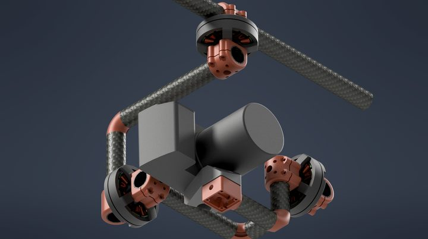

Laptop stand (2022)
A wood laptop stand with printed brackets and magnetic hinges.
Hinge brackets in Inventor Finished stand in use Finished stand Guided knife sharpener (2021)
A guided sharpener that keeps the stone at a consistent angle to the blade. Published on Thingiverse and Printables.
HyperX Cloud headset clasp (2025)
The plastic buckle on HyperX Cloud 2 and Cloud Alpha headsets often breaks. My replacement is one of my most-downloaded models on Printables.
Printed replacement installed A user's 5-star review: theirs was the only replacement of the three they tried that printed cleanly and fit Cable chains and camera gimbal
Parametric cable chains in several sizes, used on my printers and published on Printables , plus a carbon-rod camera gimbal design.
Printed cable chain Gimbal v2 design 
Gimbal v2, second view